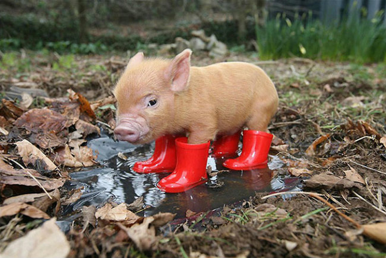

Tabela Grid
O porco é um animal mamífero que tem quatro patas, sendo que cada uma delas possui quatro dedos.
Possui um focinho cartilaginoso e 44 dentes em sua boca.
O porco é identificado com sujeira, pois elimina um cheiro forte pelas glândulas que possuem no corpo.
Este animal é uma evolução do javali, que foi domesticado pelo homem há milhares de anos.
A pele do porco é coberta por uma espessa camada de gordura.
Para de apertar o porco!
Ele foi embora por sua causa!
